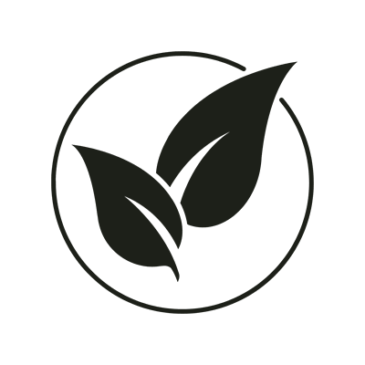
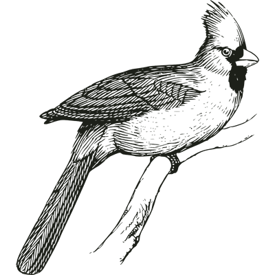
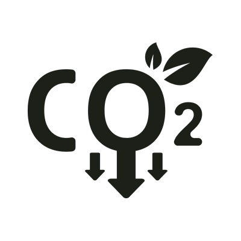
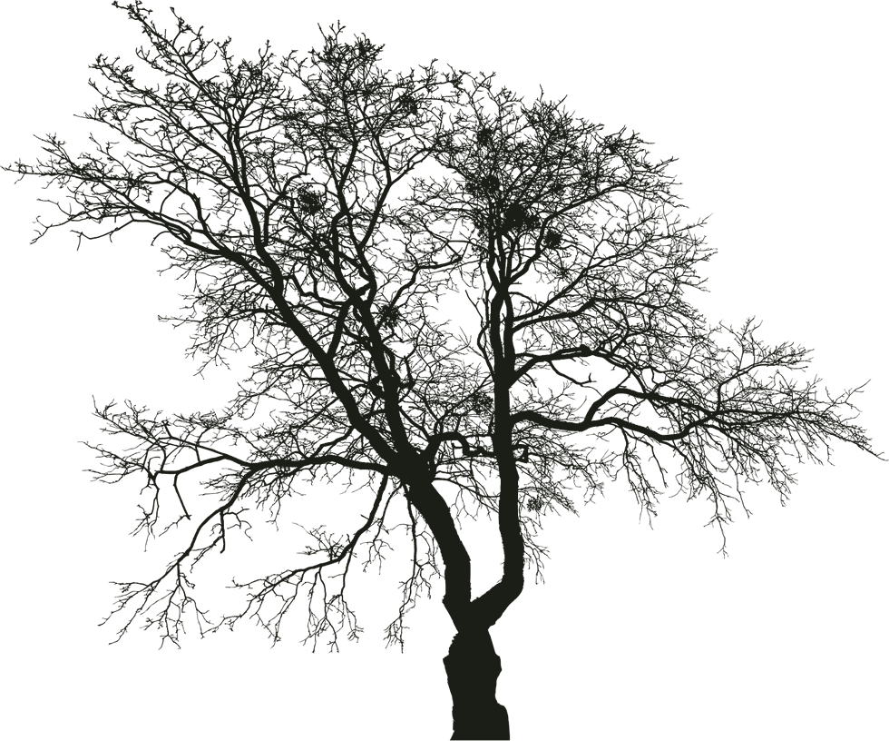
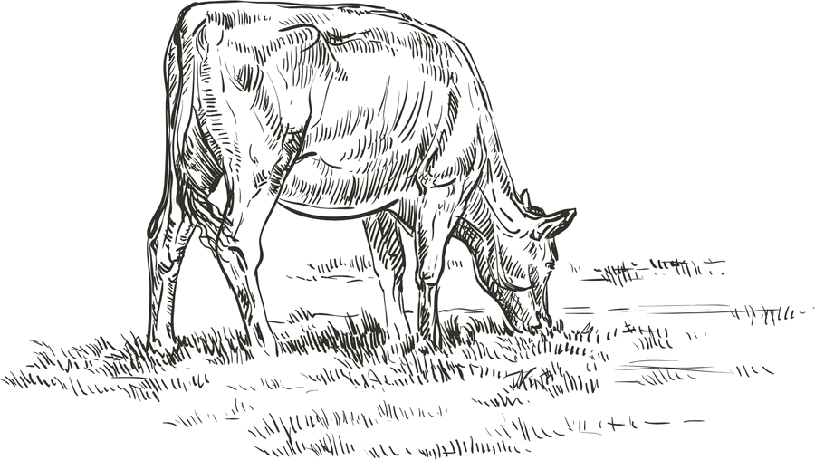
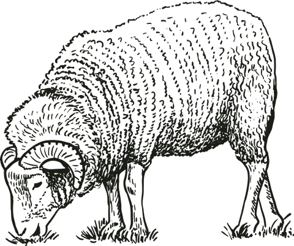
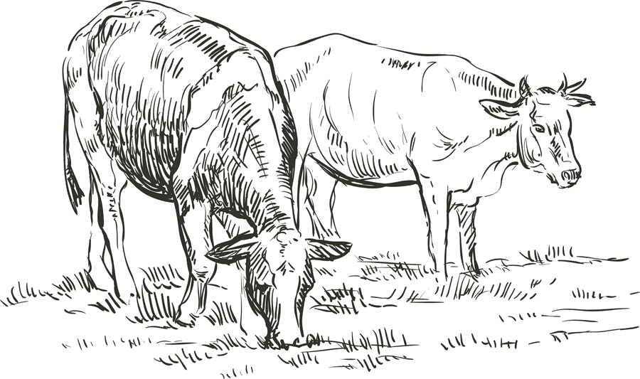
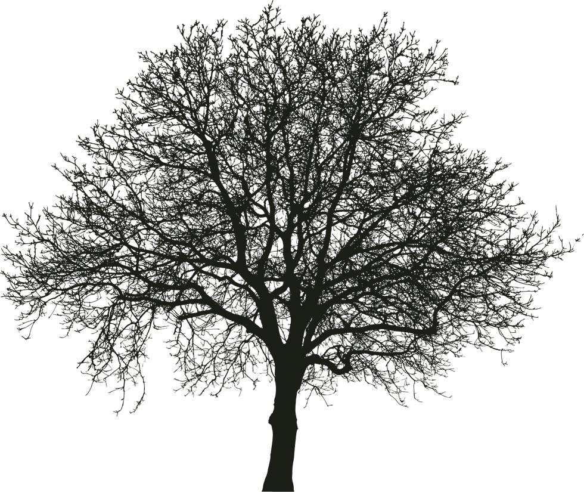

Producir carne de calidad y cuidar al medioambiente no son objetivos opuestos, sino parte de un mismo camino
Quiénes somos
Somos una empresa familiar dedicada a la producción ganadera desde hace generaciones.
En 2017 iniciamos un camino de transformación hacia la ganadería regenerativa, convencidos de que producir carne de calidad también implica cuidar la tierra que nos permite hacerlo y priorizar el bienestar de nuestros animales.
Actualmente nos dedicamos a la producción de ovinos y bovinos, respaldados por certificaciones y alianzas que validan nuestro compromiso con una producción responsable.
El establecimiento
El campo se encuentra en la localidad de Federal, provincia de Entre Ríos, Argentina, ubicado en el corazón de la Selva de Montiel, un paisaje de monte nativo y pastizales naturales donde conviven diversas especies de la fauna local. Para nosotros, no es simplemente la tierra donde producimos, sino un ecosistema del que también formamos parte y queremos respetar a través de nuestras prácticas de manejo.
Nuestros logros
- Manejo holístico
- Trabajamos con un método de planificación y toma de decisiones que mira el proceso productivo completo: suelo, pasto, agua, animales y personas. Cada decisión busca el equilibrio entre lo ambiental, lo social y lo económico.
- Refugio de aves nativas
- La conservación del monte y la biodiversidad del suelo hicieron del campo un ambiente propicio que hoy funciona como refugio para numerosas especies de aves nativas del monte entrerriano, cada vez más difíciles de encontrar en lugares donde el pastizal fue reemplazado. Esto también convirtió al campo en un punto de interés para realizar avistajes de las distintas especies.
- Crédito de carbono
- Nuestras prácticas favorecen la capacidad del suelo para capturar y almacenar CO₂ de la atmósfera, permitiéndonos contribuir activamente a la reducción de gases de efecto invernadero. Gracias a esto, nos convertimos en uno de los primeros establecimientos de Argentina en integrar protocolos certificados para la medición y captura de carbono.



Filosofía de trabajo
Creemos que los alimentos deben producirse de manera sana, responsablemente y en armonía con la naturaleza.
Por eso trabajamos para ofrecer carne 100% a pastura con un sabor auténtico, alto valor nutricional y una calidad que comienza mucho antes de llegar al plato:
- En la salud del suelo
- En el bienestar de los animales
- En el respeto por los procesos naturales
Nuestro compromiso
Producir la mejor carne 100% a pastura, respetando al medioambiente, su biodiversidad y regenerando el suelo para las próximas generaciones.





Beneficios
-
Para los animales
Viven como corresponde
A campo abierto, en grupo, con libre acceso al agua, en montes con sombra para reparo y comiendo lo que el pastizal brinda en cada estación. Se mueven, pastorean y descansan a su ritmo, sin encierro ni dietas forzadas. Dando como resultado un animal sin estrés, de temperamento dócil, que crece mejor y se enferma menos.
-
Para el ambiente
El campo se recupera
Nuestras prácticas promueven la biodiversidad de los ecosistemas, contribuyendo a la regeneración de los suelos y a la conservación ambiental. A través de la rotación planificada del ganado y el descanso de los potreros, se estimula el crecimiento del pastizal, permitiendo que desarrolle raíces más profundas y aporte materia orgánica. Esto se traduce en una mayor cobertura vegetal, una mejor infiltración del agua y un incremento en la captura de carbono.
-
Para las personas
Más sabor y mayor valor nutricional
La carne producida 100% en praderas naturales posee beneficios para la salud de los consumidores, ya que contiene más omega-3 y una relación omega-6/omega-3 más equilibrada que la carne de feedlot (alimentada a grano), además tiene mayores niveles de CLA, vitamina E y carotenos. Es más magra y tiene un sabor más intenso y concentrado.
Contacto
¿Te gustaría conocer nuestros productos? ¡Envianos tu consulta!